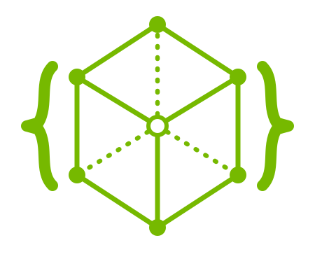
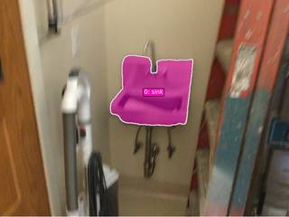
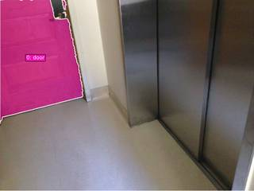

Plan
East = wall normal, North = Up × East. Segment, reconstruct, project door→sink onto the axes.

Determining where objects are, how they relate, and how they move in 3D: effortless for humans, unreliable for state-of-the-art VLMs.
The capability of a tool-augmented agent is bounded not by which tools are available, but by how those tools can be composed: which intermediate states are observable, and whether the agent can revise before committing.
Writes a complete program in one shot. Cannot revise once execution starts, so any wrong assumption propagates to the answer.
Dispatches typed tools through a fixed JSON schema. Cannot freely combine perception outputs with NumPy / SciPy.
Code as the action interface, backed by a persistent kernel. Perception outputs are ordinary variables.
A training-free agent with a stateful Python kernel pre-loaded with input frames and perception + geometry primitives. The VLM writes one executable cell per step, conditioned on all prior outputs.
Masks, depth maps, point clouds and plots live as ordinary variables that persist across steps.
show(...) embeds rendered images into the next observation, so the agent can see a mask before trusting it.
A new computation is a new composition of primitives, assembled at test time.
InputImagesThe sampled frames or images the agent reads observations from.
MetadataFrame rate, duration, and indices, letting the agent reason about temporal structure.
toolsSAM 3 segmentation · Depth Anything 3 reconstruction · geometry utilities.
show(...)Registers an image into the agent's next observation. plt.show() works too.
vlmA separate VLM session: vlm.locate() for grounding, ask_with_thinking() for commonsense.
ReturnAnswer(...)Submits the final candidate answer and terminates the loop.
seg_sink = tools.SAM3.segment(InputImages[3], "sink") seg_door = tools.SAM3.segment(InputImages[0], "door") show([seg_sink.visualize(), seg_door.visualize()])
recon = tools.Reconstruct(InputImages) v_north = np.cross([0,1,0], v_east) # Up × East ReturnAnswer("A") # Northeast


Each axis is rescaled so SpatialClaw lands at a constant radius, so the circle makes the consistency visible at a glance.
| Backbone | Single-img | Multi-view | General | Video & 4D | Video Und. | Average | Δ |
|---|---|---|---|---|---|---|---|
| Qwen 3.5-397B-A17B | 60.8 | 60.7 | 64.7 | 58.5 | 59.7 | 60.4 | +3.1 |
| Qwen 3.5-122B-A10B | 58.8 | 54.6 | 62.3 | 54.3 | 56.5 | 56.9 | +3.2 |
| Qwen 3.6-35B-A3B | 58.8 | 55.4 | 62.4 | 54.0 | 57.8 | 57.2 | +4.6 |
| Qwen 3.6-27B | 61.7 | 64.0 | 67.0 | 60.6 | 62.7 | 62.7 | +7.7 |
| Gemma 4-31B | 61.9 | 62.5 | 64.8 | 55.1 | 59.4 | 59.9 | +6.5 |
| Gemma 4-26B-A4B | 56.0 | 56.8 | 62.7 | 48.7 | 52.8 | 54.3 | +6.3 |
Δ is the gain over each backbone's no-tool baseline. Two model families, 26B–397B parameters, no model-specific tuning.
Against prior agents on the same Gemma 4-31B backbone, SpatialClaw improves by +11.2 pp over SpaceTools-Toolshed.
Gains are largest precisely where chained geometric computation across frames and viewpoints is required, and the agent spontaneously adapts its tool composition to the question type, with no category-specific routing.
The gains come from the action interface itself, not engineered utilities or perception tooling. Code is the right abstraction for spatial reasoning agents.